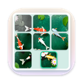

Tockette
मेनू बार से बस एक बार खींचें, और टाइमर शुरू।
यह क्या करता है
Tockette मेनू बार में एक छोटे डायल के रूप में रहता है। उससे नीचे खींचकर छोड़ें और टाइमर शुरू: थोड़ा खींचें तो कुछ मिनट, आगे खींचें तो चार घंटे तक। या उस पर क्लिक करके जो चाहें लिखें।
- एक बार खींचें: पॉइंटर के पास का बुलबुला अवधि और ख़त्म होने का समय दिखाता है। छोड़ें, और टाइमर चल पड़ा।
- या लिखें: 25 चाय, 1h30 कॉल, 90s अंडे। समय लिखने पर अलार्म लगता है: 5pm, 17:30 मीटिंग।
- जितने चाहें उतने, हर एक का अपना नाम, रोकें, एक मिनट और, और रद्द करें। सबसे पहले ख़त्म होने वाला टाइमर जैसे-जैसे चलता है, डायल ख़ाली होता जाता है।
- चूकना मुश्किल: टाइमर पूरा होने पर मेनू बार से घंटी के साथ एक कार्ड नीचे आता है और हो गया, स्नूज़ और फिर से के विकल्प देता है। इन्हीं बटनों वाली सूचना Mac लॉक होने पर भी आप तक पहुँचती है।
- झटपट शुरू: आपकी आम अवधियों और हाल में सेट किए गए नाम वाले टाइमर के लिए एक क्लिक।
macOS 14 Sonoma या उसके बाद का ज़रूरी है।
एक पैराग्राफ़ में गोपनीयता
Tockette के पास न नेटवर्क की पहुँच है, न अकाउंट, न ट्रैकिंग। आपके टाइमर और उनके नाम आपके Mac पर ही रहते हैं। पूरी गोपनीयता नीति यही बात ज़्यादा विस्तार से कहती है।
इसी डेवलपर के और ऐप्स
छोटे ऐप्स, हर एक किसी एक काम को बढ़िया ढंग से करने के लिए बना। न अकाउंट, न विज्ञापन, और इनमें से कोई भी आपको ट्रैक नहीं करता।
 Statuetteमेन्यू बार में CPU, मेमोरी, डिस्क और नेटवर्क।Mac
Statuetteमेन्यू बार में CPU, मेमोरी, डिस्क और नेटवर्क।Mac Zonetteआपके काम के सारे टाइम ज़ोन, एक क्लिक पर।MaciPhone और iPadAndroid
Zonetteआपके काम के सारे टाइम ज़ोन, एक क्लिक पर।MaciPhone और iPadAndroid Lunetteचाँद और सूरज, एक नज़र में।MaciPhone और iPadAndroid
Lunetteचाँद और सूरज, एक नज़र में।MaciPhone और iPadAndroid Lunaretteचंद्र कैलेंडर, चार परंपराओं में।MaciPhone और iPadAndroid
Lunaretteचंद्र कैलेंडर, चार परंपराओं में।MaciPhone और iPadAndroid Pausetteआँखों और कमर के लिए हल्के-फुल्के ब्रेक।Mac
Pausetteआँखों और कमर के लिए हल्के-फुल्के ब्रेक।Mac Poisetteसीधे बैठें, आपके पहने AirPods याद दिलाएँगे।MaciPhone और iPad
Poisetteसीधे बैठें, आपके पहने AirPods याद दिलाएँगे।MaciPhone और iPad Hushetteशांत परिवेश ध्वनि, जो कभी दोहराई नहीं जाती।MaciPhone और iPadAndroid
Hushetteशांत परिवेश ध्वनि, जो कभी दोहराई नहीं जाती।MaciPhone और iPadAndroid Tapsodyटाइप करते समय मैकेनिकल कीबोर्ड की आवाज़ें।Mac
Tapsodyटाइप करते समय मैकेनिकल कीबोर्ड की आवाज़ें।Mac Thrumlineआपकी हृदय गति, मेन्यू बार में लाइव।Mac
Thrumlineआपकी हृदय गति, मेन्यू बार में लाइव।Mac Nightjarआपके Mac को जगाए रखे। सच में।Mac
Nightjarआपके Mac को जगाए रखे। सच में।Mac Umbretteजिस विंडो में आप काम कर रहे हैं, उसके सिवा सब कुछ मंद।Mac
Umbretteजिस विंडो में आप काम कर रहे हैं, उसके सिवा सब कुछ मंद।Mac Prompetteआपके कैमरे के ठीक नीचे एक टेलीप्रॉम्प्टर।MaciPhone और iPadAndroid
Prompetteआपके कैमरे के ठीक नीचे एक टेलीप्रॉम्प्टर।MaciPhone और iPadAndroid Talletteआपके जोड़-घटाव के लिए एक पेपर टेप।MaciPhone और iPadAndroid
Talletteआपके जोड़-घटाव के लिए एक पेपर टेप।MaciPhone और iPadAndroid Probetteमीडिया फ़ाइल की हर तकनीकी बात, आसान शब्दों में।MaciPhone और iPadAndroid
Probetteमीडिया फ़ाइल की हर तकनीकी बात, आसान शब्दों में।MaciPhone और iPadAndroid Bindetteऑडियो फ़ाइलों को एक पूरी ऑडियोबुक में बदलें।MaciPhone और iPadAndroid
Bindetteऑडियो फ़ाइलों को एक पूरी ऑडियोबुक में बदलें।MaciPhone और iPadAndroid Lettrettewinmail.dat और .msg फ़ाइलें वैसे ही खोलें, जैसे भेजी गई थीं।MaciPhone और iPad
Lettrettewinmail.dat और .msg फ़ाइलें वैसे ही खोलें, जैसे भेजी गई थीं।MaciPhone और iPad Nhanh Tayचार जवाबों को क्रम में लगाएँ। फटाफट।MaciPhone और iPadAndroid
Nhanh Tayचार जवाबों को क्रम में लगाएँ। फटाफट।MaciPhone और iPadAndroid Pinetteनोट जो हमेशा नज़र में रहें।MaciPhone और iPadAndroid
Pinetteनोट जो हमेशा नज़र में रहें।MaciPhone और iPadAndroid Usagetteमेन्यू बार में Claude की उपयोग सीमाएँ।Mac
Usagetteमेन्यू बार में Claude की उपयोग सीमाएँ।Mac Squiggoएक दोस्ताना साथी के साथ ड्रॉइंग करें।MaciPhone और iPadAndroid
Squiggoएक दोस्ताना साथी के साथ ड्रॉइंग करें।MaciPhone और iPadAndroid Foremanकारीगरों के लिए काम, कोटेशन और इनवॉइस।iPhone और iPad
Foremanकारीगरों के लिए काम, कोटेशन और इनवॉइस।iPhone और iPad
Tilewakeएक स्लाइडिंग पहेली, जिसकी तस्वीरें जाग उठती हैं।MaciPhone और iPadAndroid